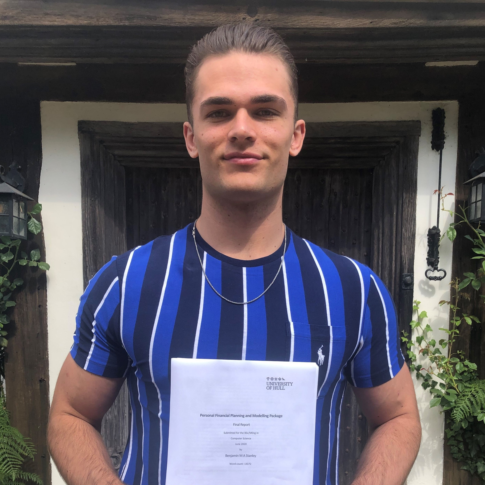

About Me

I am a BSc Computer Science graduate from the University of Hull. I graduated in 2020 and achieved First Class honours.
My greatest strengths are in Object-Oriented programming, with a focus on C#, and a wide spectrum of knowlege using the following:
| Languages: | C#, HTML, CSS, JavaScript, Java, Python, XML, SQL, MATLAB |
|---|---|
| Frameworks: | Entity Framework, ASP.Net (Web App, MVC), Bootstrap |
| Databases: | Microsoft SQL Server |
| Tools: | SVN, Postman, Trello, Visual Studio IDE, Android Studio IDE (app development), Azure, WinForms |
| Development: | Agile, Waterfall, overall project/product management |
| Other: | Data Mining and Decision Systems (Machine Learning), E-Commerce and E-Business, Networking and UI Design |
I have always maintained a firm interest in technology, however funnily enough, it was seeing the tv series 'Mr Robot' for the first time that ensured I wanted to study in further education to specialise as a developer of some sort (Not quite all the overexaggerated underground hacking as seen in the show!). I am glad I have stuck down this route, and can't wait for all the future career prospects that lie ahead of me.
There are also a few books that really peaked my interest and inspired me to become a better developer, and I would recommend to anyone regardless of their programming ability:
- Python Programming for the absolute beginner - Michael Dawson
- This book (as the title suggests) is targetted more towards those learning Python as their first language, although is also suitable for those who are already competent in another language of two and wish to quickly learn Python through transferrable knowledge. If you are looking to make your first steps into programming, I would reccomend this book.
- C# Programming Yellow Book - Rob Miles
-
This book was actually one that was recommended alongside our course of study due to the author previously being
a lecturer of Computer Science at the University of Hull where I studied.
This book can actually be viewed free online, I have included a link here.
-
This book was actually one that was recommended alongside our course of study due to the author previously being
a lecturer of Computer Science at the University of Hull where I studied.
- Think like a programmer - V. Anton Spraul
- Despite this book using the C++ language for code demonstration of the problems this that are proposed and then walked around, the key teachings of problem solving gained from this book are invaluable and certainly instill a more programmer-like thought process in the reader.
- The C# Player's Guide - RB Whitaker
- This was another book reccomended by the University for reading alongside my studies. This book is a good starting point for those looking for a starting point into C# development, or even those already at an intermediate level, and can be useful as a reference to come back to.
Regarding my other interests, I enjoy playing football and hockey, playing the latter for my University first XI. I enjoy regular visits to the gym to perform weightlifting, and like listening to music and reading in my spare time. I occassionally watch football matches and am also an avid fan of Arsenal Football Club.
These are a few books that I would reccomend around the topics of self development and fitness (if you are interested!):
- The Rob Lipsett Game Plan - Rob Lipsett
- Happy - Derren Brown
- The Chimp Paradox - Dr Steve Peters
- 12 Rules for Life - Jordan B. Peterson

Site Navigation
You are currently on my site home page.
To view my previous module/project completion throughout my time at universtiy, with a breakdown of each, what it entailed and the skills required/gained, please navigate to the 'Education' section.
To view my projects completed throughout both University and external (free time), please navigate to the 'Projects' section.
To load a pdf of my Cirriculum Vitae, please navigate to the 'Resume' section.
For information on how to contact me, please navigate to the 'Contact' section.